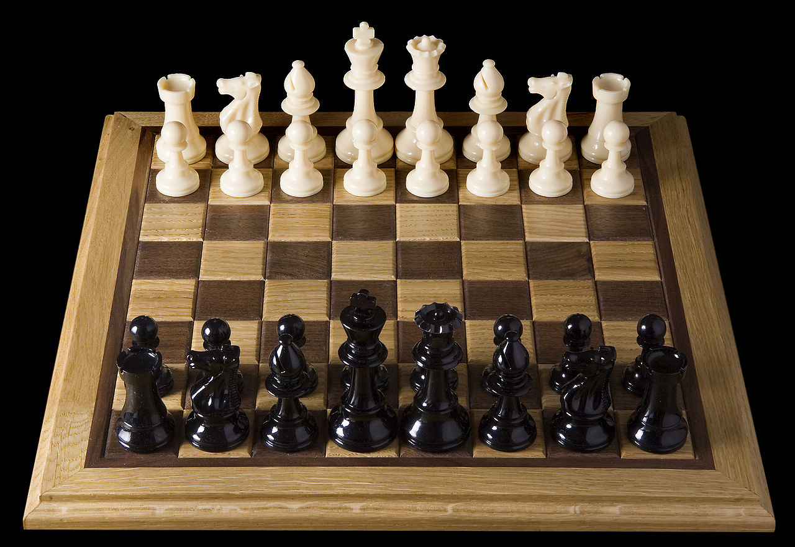
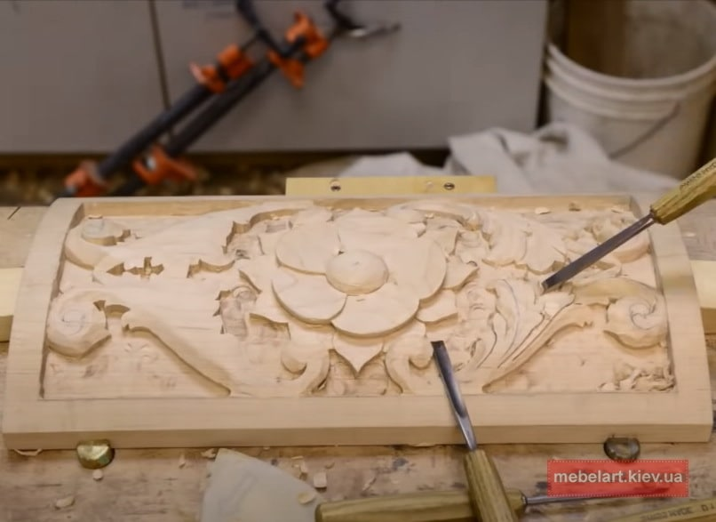

Хобі
Шахи
Ша́хи — абстрактна стратегічна гра на спеціальній дошці, що має назву шахівниця й поділена на 64 світлі та темні клітини (поля), між 16 світлими (білими) і 16 темними (чорними) фігурами за встановленими для них правилами пересування. У цю гру грають мільйони людей по всьому світі. Походить від стародавньої індійської гри чатуранґа, яка, крім того, є ймовірним предком східних стратегічних ігор сянці, чангі і сьоґі. Шахи потрапили до Європи в 9 столітті, внаслідок завоювань Омейядів в Іспанії. Фігури набули своєї нинішньої сили в Іспанії наприкінці 15 століття; правила стандартизовано в 19 столітті.

Різьба по дереву
Рі́зьблення по де́реву— вид декоративно-прикладного мистецтва, також різьблення є одним з видів художньої обробки дерева поряд з випилюванням, токарною обробкою.
Різьблення по дереву це мистецтво, яким славилися стародавні слов'яни ще в XI столітті. Проте саме мистецтво виникло набагато раніше.
У XVIII–XIX ст. різьблення в Україні досягло найвищого рівня. Різьбленням оздоблювали деталі будівель — одвірки, сволоки, балки, налічники, піддашні дошки, горішні вікна. В інтер'єрі житла різьбленням прикрашали віконниці, одвірки, полички, мисники. Особливу увагу різьбярі приділяли сволоку, який займав більше місця в інтер'єрі. Часто його оздоблювали плосковиїмчастим різьбленням з мотивами розеток, кіл, смужок, ламаних ліній, бокові частини іноді профілювали крученим орнаментом. Традиція оздоблення сволоків існує в народному будівництві досі.
